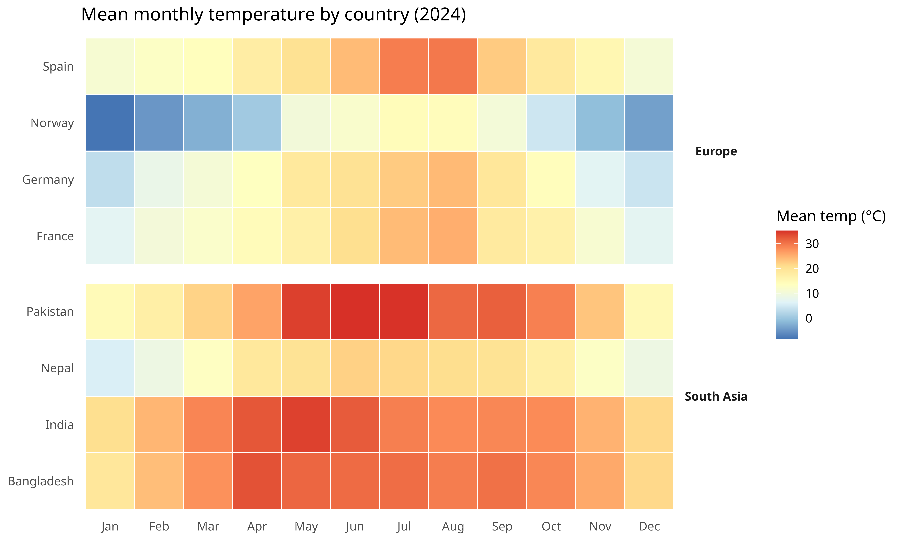
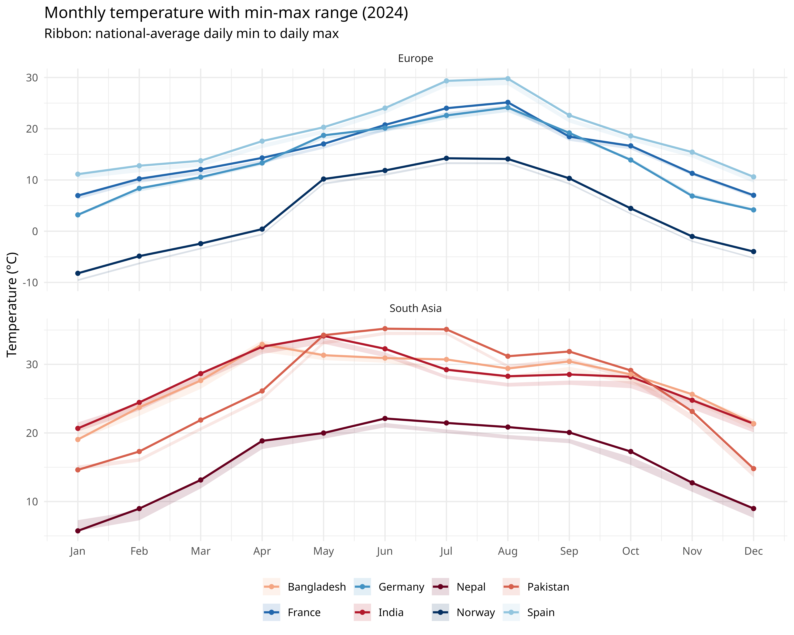
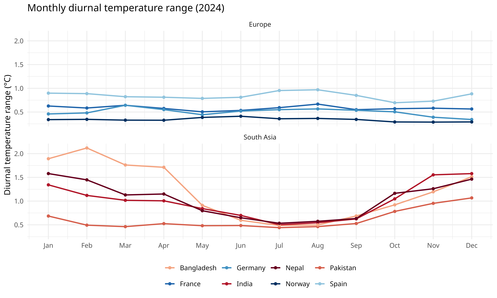
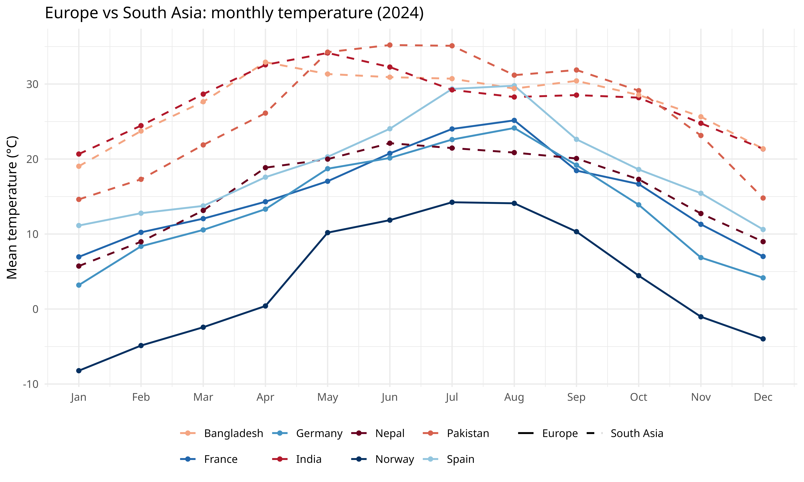

get_era5_country_temperature() resolves a country
boundary, downloads monthly ERA5 data, and returns cosine-latitude
area-weighted national averages. One call replaces the manual workflow
of finding boundaries, writing GeoJSON, calling
era5ify_geojson(), and aggregating grid cells.
Monthly mean, max, and min temperatures for four European and four South Asian countries, 2024.
Download data
The variables argument accepts shorthands
"mean", "max", and "min".
countries <- c(
"France", "Germany", "Spain", "Norway",
"India", "Pakistan", "Bangladesh", "Nepal"
)
all_data <- lapply(countries, function(cntry) {
df <- get_era5_country_temperature(
country = cntry,
start_date = "2024-01-01",
end_date = "2024-12-31",
variables = c("mean", "max", "min")
)
df$country <- cntry
df
})
temps <- bind_rows(all_data)
head(temps)
# year month temperature_max temperature_mean temperature_min country
# 1 2024 1 6.852207 6.953495 6.225498 France
# 2 2024 2 10.040868 10.223489 9.456424 France
# 3 2024 3 11.683986 12.049970 11.041785 France
# 4 2024 4 13.844017 14.307139 13.269198 France
# 5 2024 5 16.621092 17.035453 16.117049 France
# 6 2024 6 20.049674 20.751232 19.515942 FranceTag each country with its region for faceting.
region_map <- c(
France = "Europe", Germany = "Europe", Spain = "Europe", Norway = "Europe",
India = "South Asia", Pakistan = "South Asia",
Bangladesh = "South Asia", Nepal = "South Asia"
)
temps$region <- region_map[temps$country]
temps$month_label <- factor(month.abb[temps$month], levels = month.abb)
# Cool tones for Europe, warm tones for South Asia
country_colors <- c(
France = "#2166AC", Germany = "#4393C3",
Spain = "#92C5DE", Norway = "#053061",
India = "#B2182B", Pakistan = "#D6604D",
Bangladesh = "#F4A582", Nepal = "#67001F"
)Seasonal heatmap
ggplot(temps, aes(x = month_label, y = country, fill = temperature_mean)) +
geom_tile(color = "white", linewidth = 0.4) +
facet_grid(region ~ ., scales = "free_y", space = "free_y") +
scale_fill_distiller(
palette = "RdYlBu", direction = -1,
name = "Mean temp (\u00B0C)"
) +
labs(
x = NULL, y = NULL,
title = "Mean monthly temperature by country (2024)"
) +
theme_minimal(base_size = 12) +
theme(
panel.grid = element_blank(),
strip.text.y = element_text(angle = 0, face = "bold")
)
South Asian countries stay above 20 °C year-round. European countries swing 20+ °C between winter and summer, with Norway dropping below freezing from November through March.
Monthly trend lines with min/max ribbon
ggplot(temps, aes(x = month, color = country, fill = country)) +
geom_ribbon(aes(ymin = temperature_min, ymax = temperature_max),
alpha = 0.15, color = NA
) +
geom_line(aes(y = temperature_mean), linewidth = 0.9) +
geom_point(aes(y = temperature_mean), size = 1.5) +
facet_wrap(~region, ncol = 1, scales = "free_y") +
scale_color_manual(values = country_colors) +
scale_fill_manual(values = country_colors) +
scale_x_continuous(breaks = 1:12, labels = month.abb) +
labs(
x = NULL, y = "Temperature (\u00B0C)",
title = "Monthly temperature with min-max range (2024)",
subtitle = "Ribbon: national-average daily min to daily max",
color = NULL, fill = NULL
) +
theme_minimal(base_size = 12) +
theme(legend.position = "bottom")
Diurnal range
The gap between daily max and min (DTR) is wider in continental and arid climates than in humid tropical ones.
temps$dtr <- temps$temperature_max - temps$temperature_min
ggplot(temps, aes(x = month, y = dtr, color = country)) +
geom_line(linewidth = 0.9) +
geom_point(size = 1.5) +
facet_wrap(~region, ncol = 1) +
scale_color_manual(values = country_colors) +
scale_x_continuous(breaks = 1:12, labels = month.abb) +
labs(
x = NULL, y = "Diurnal temperature range (\u00B0C)",
title = "Monthly diurnal temperature range (2024)",
color = NULL
) +
theme_minimal(base_size = 12) +
theme(legend.position = "bottom")
Regional comparison
All eight countries on a single axis, with line type separating the two regions.
ggplot(temps, aes(
x = month, y = temperature_mean,
color = country, linetype = region
)) +
geom_line(linewidth = 0.8) +
geom_point(size = 1.5) +
scale_x_continuous(breaks = 1:12, labels = month.abb) +
scale_color_manual(values = country_colors) +
scale_linetype_manual(values = c("Europe" = "solid", "South Asia" = "dashed")) +
labs(
x = NULL, y = "Mean temperature (\u00B0C)",
title = "Europe vs South Asia: monthly temperature (2024)",
color = NULL, linetype = NULL
) +
theme_minimal(base_size = 12) +
theme(legend.position = "bottom")